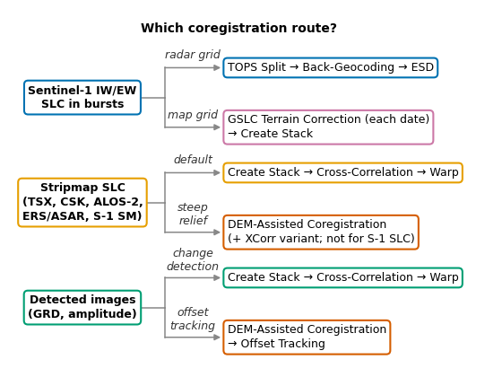

| SAR Concepts: Coregistration | |
Coregistration resamples Secondary images onto the pixel grid of a Reference image, so that the same pixel shows the same ground in every date. Change detection and, above all, interferometry compare images pixel by pixel; residual misalignment becomes false change or lost coherence.
For detected images an offset of a few tenths of a pixel already creates false change along edges. For complex images the interferogram multiplies Reference and conjugate Secondary sample by sample; if the Secondary is misplaced by Δ resolution cells, the samples see partly different scatterers and the coherence drops by (Just and Bamler, 1994; Hanssen, 2001)
γreg = sin(πΔ) / (πΔ) for 0 ≤ Δ ≤ 1, and 0 beyond
for a rectangular spectrum: Δ = 0.1 keeps 0.98, 0.25 keeps 0.90, 0.5 only 0.64. Products are sampled 1.1 to 1.5 times finer than their resolution (see Resampling), so the usual stripmap target of about 1/10 pixel is safe. Sentinel-1 TOPS is the exception: because of the Doppler ramp in each burst, an azimuth error of 0.01 pixel already gives phase jumps of about 30° at the burst seams, and the target is about 1/1000 pixel (see TOPS).
The offsets can come from two sources:
A correlation offset gets more precise with the square root of the number of pixels in the window and less precise as coherence drops (Bamler and Eineder, 2005). Modern chains combine both methods: geometry first, then a data-driven estimate of the small, nearly constant remainder: Back-Geocoding plus Enhanced Spectral Diversity for TOPS (Scheiber and Moreira, 2000; Yagüe-Martínez et al., 2016), DEM-assisted coregistration plus cross-correlation, or GSLC geocoding (with a bias estimate for Secondaries that Create Stack geocodes).

Figure 1. Which SNAP coregistration route to use for which input.
A stack of many dates is coregistered to one Reference, with offsets estimated per Secondary. With cross-correlation every Secondary must correlate with the Reference, so choose a Reference near the centre of the stack in time and perpendicular baseline (Radar > Interferometric > InSAR Stack Overview proposes the date with the highest modelled mean coherence). Geometric methods do not need this, which makes them robust for long time series. Any pair of dates (small-baseline networks) is then formed from that one stack.
The menu graph Radar > Coregistration > Coregistration runs the three operators and switches on fine registration and Optimize for InSAR.
CreateStack) collects the products and shifts each Secondary by a
whole-pixel initial offset, computed from the orbits at the scene centre (Initial Offset Method
Orbit, default) or from the products' geolocation (Product Geolocation).
With Resampling Type NONE (default) nothing is interpolated; the stack is only a
pre-alignment for Cross-Correlation and Warp. Output Extents: Master (default,
the Reference extent), Minimum (the overlap) or Maximum (the union); with
NONE only Master is accepted. Sentinel-1 TOPS SLC still in bursts is
refused.Cross-Correlation) places a grid of Number of GCPs
(2000). The coarse step correlates intensity windows (default 128 × 128) by FFT,
refines the peak with the row and column interpolation factors (default 2, i.e. 1/2 pixel) and repeats,
up to Max Iterations (10), until the shift is within GCP Tolerance (0.5 pixel; it may not
be smaller than 1/interpolation factor; the Coregistration menu graph sets interpolation factor 4 and
GCP Tolerance 0.25). For complex input the operator always adds the fine step,
whatever the check boxes say: 32 × 32 windows of de-meaned amplitude are correlated, and the
correlation surface around the peak (±16 pixels) is oversampled 16 times, giving offsets in
steps of 1/16 pixel. GCPs whose normalised peak correlation is below Coherence Threshold (0.6)
are dropped.Warp) fits a polynomial of Warp Polynomial Order 2 (default; 1 or 3
possible) per Secondary. For complex stacks, Significance Level for Outlier Removal 0.05
(default), 0.1 or 0.001 run data snooping (Baarda, 1968): the worst GCP (largest
waz2 + wrg2; the w-test is a normalised residual) is removed and the fit repeated, up to 20 times, until all w-tests pass the critical value
(1.96, 1.64 or 3.29). The values 0.5 and 1.0, and all detected stacks, use an older rule instead: while
the mean GCP residual (RMS) exceeds the value, read in pixels, GCPs above mean + one standard deviation
are removed; finally every GCP above the value is removed. The Warp dialog labels this field RMS
Threshold (pixel accuracy). On detected stacks the default 0.05 therefore keeps only GCPs within
0.05 pixel of the fit; with coarse-only matching (1/2-pixel steps by default) choose 0.5 or 1.0. If the
w-test fit fails (log: 'Error computing complex polynomial model'), Warp falls back to the RMS rule for
all Secondaries. The default kernel is Cubic convolution (6 points) (see
Resampling). Warp does not deramp: for a large Doppler centroid
wrap it in Demodulate and Remodulate. Show Residuals opens
<product>_residual.txt from the SNAP report folder.DEM-Assisted-Coregistration) computes the offsets of
every pixel from orbits and the DEM. The menu variant with XCorr adds Cross-Correlation and
Warp. It refuses every Sentinel-1 SLC, stripmap included; Sentinel-1 GRD is accepted.Abstracted_Metadata > Band_<band> > WarpData
(ref_x, ref_y, sec_x, sec_y, rms).
To see them as arrows from the Secondary to the Reference position, open the Secondary band and add the
Coregistered GCP Movement Vector layer in the Layer Manager.NONE on its own for InSAR. It aligns only to whole pixels;
Cross-Correlation and Warp must follow.See also Offset tracking, InSAR fundamentals, Multitemporal stacks and SAR geometry. Workflows: Stripmap DInSAR, Sentinel-1 TOPS DInSAR, Geocode-First InSAR with GSLC and Offset Tracking.